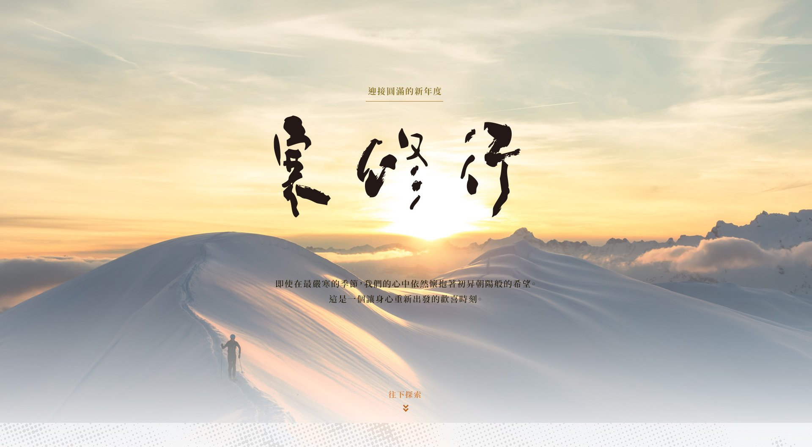
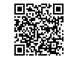

反省
檢視自我，清澈內心。在嚴寒中沉澱，反思過去的步伐，為新的年度打下清淨的基礎。
迎接圓滿的新年度。即使在最嚴寒的季節，我們的心中依然懷抱著初昇朝陽般的希望。這是一個讓身心重新出發的歡喜時刻。

往下探索在日本，從武術到宗教領域都有寒冬的修練。透過身心自律與生活陶冶，鍊出堅定的決心與謙恭的態度，以全新的視野重新出發。
檢視自我，清澈內心。在嚴寒中沉澱，反思過去的步伐，為新的年度打下清淨的基礎。
吸收能量，培育智慧。透過新的領悟充實自己，將嚴酷轉化為生命成長的豐富養分。
確認方向，重新出發。設定新的目標，滿懷希望與喜悅地邁向充滿力量的未來。
1936年的正月初，開祖真如教主和攝受心院開始寒修行，發願濟度眾生，為真如苑的歷史留下第一個腳印。
真如教徒在此時機，思惟真如雙親創立教法當初的決心。這是一個讓我們能夠體驗他們初衷的機會，決意一生慈悲利他修行，誓願無私的幫助他人，並祈願眾生也能如此求道。
「寒修行意味著：覺悟成爲引導他人的明燈。」
在寒冬的清晨，與萬物一同甦醒。透過精進的修行，點亮內心的慈悲光芒，迎接黎明的新雪。
真如雙親真誠利他的決心，向他人伸出援手。
寒修行所策畫的內容適合所有人參加，與我們共享這份溫暖與希望。
選擇適合您的參與方式。無論身在何處，修行的心皆能相通。
於台灣各地指定中心參與線下儀式，親身感受道場莊嚴氛圍與團體動力。
透過平台參與即時互動引導，適合無法親臨現場但希望獲得即時引導的共修者。
台灣教區設置「寒修行」專用網站，可以直接掃描QR code進入網路參加，線上參加者請回報下方QR code，一天參加多場也僅須回報一次。

各自在家讀經，拜讀教苑刊物《一如之道》《瑞聲法語》等加深理解真如教法的原點，寒修行結束後更加遵循拜讀教苑刊物教導精進下去。